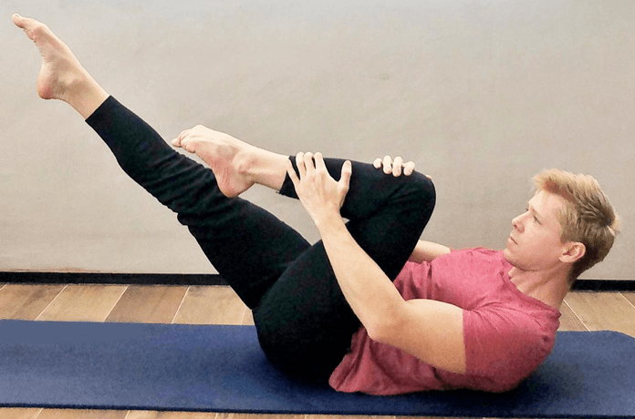

14 OUT 20
2

Home Office X Pilates
Nos últimos meses, devido ao isolamento social, empresas aderiram ao home office, que levou muitos a terem que improvisar um escritório em casa. Mas nem sempre conseguimos adaptar nosso posto de trabalho em casa da maneira correta. Essa má postura durante o seu expediente pode acabar contribuindo para o aparecimento de dores e, futuramente, patologias ortopédicas e neurológicas. Portanto, é preciso fazer algo para tratar, ou mesmo prevenir.